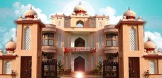

TKM College of Engineering, the oldest engineering college in private sector in the state of Kerala, was established in 1958 by Janab Thangal Kunju Musaliar, a reformer, philanthropist and businessman under the aegis of the TKM College Trust, in Kollam district of Kerala. The institution has been a torchbearer for social and technological transformation since its inception and has touched the lives of countless individuals from around the nation, both directly and indirectly. Over a period of six decades, the college produced thousands of brilliant engineers, many of whom are stalwarts in their fields across the globe.
Visit the college website tkmce.ac.in
Here are some of the departments and their highlites.
Department of MCA mca
Department of EEE eee
Department of BArch barch